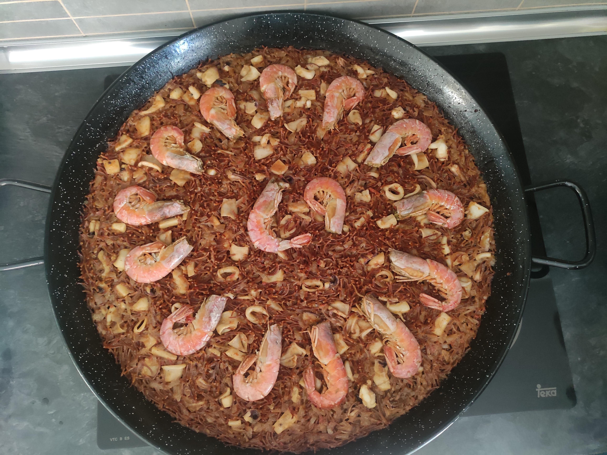

Fideua recipe

Description
Delicious meal to enjoy with your family and friends. It's easy to cook and with a few bucks you can make people happy
This is a traditional Spanish meal that takes about an hour, or an hour and a half, to prepare. It is usually served with a glass of wine.
Ingredients
- Fish stock
- 3 shrimps per person
- 1kg of cuttlefish
- An onion and a few garlic cloves
- 200g of tomato sauce
- Salt and saufron
- 1kg of noodles
Steps
- First, prepare the fish stock. It's easier if you buy it.
- Then, chop all the ingredients.
- Once your pan is hot, throw the shrimps and the cuttlefish. Sear them.
- Chop the onion and garlic cloves and add them to the pan.
- Add the tomato sauce until it reduces.
- Add the fish stock. When it starts boiling, add the noodles.
- Wait 20 minutes and serve.